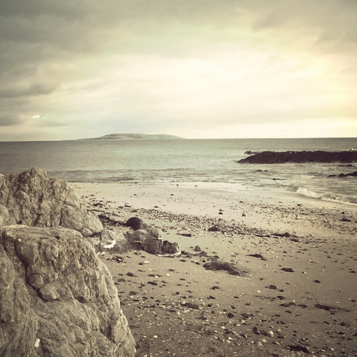
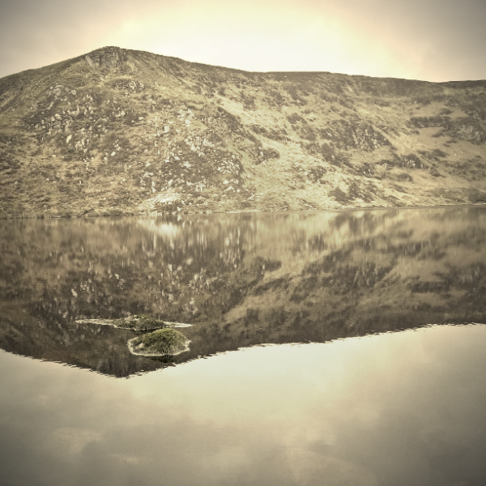
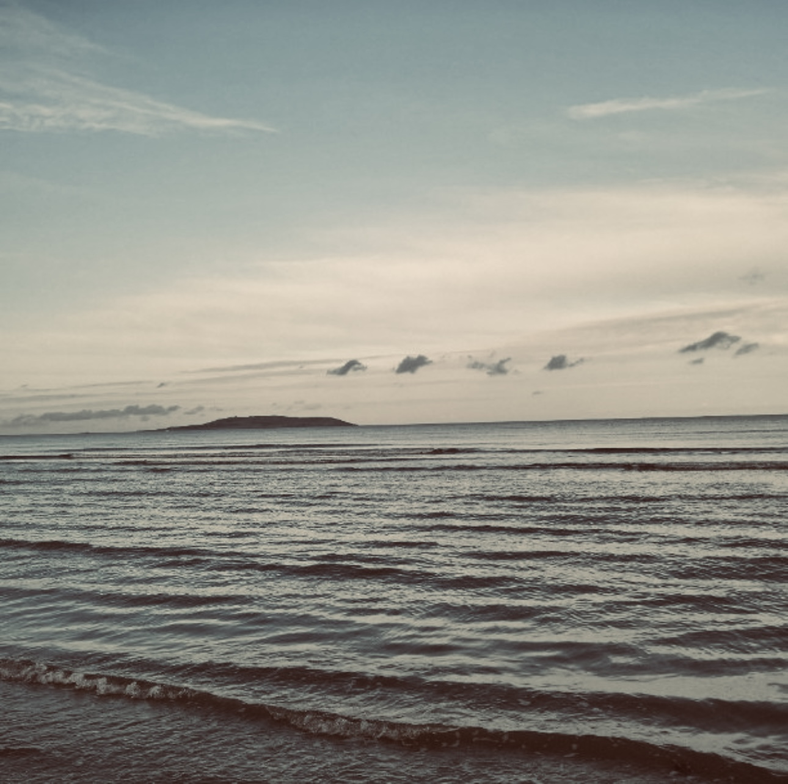

About

I am Niko Sarcevic, a cosmologist with a deep interest in mitigating the effects of astrophysical systematics,
their modeling, and understanding their interplay. I am also passionate about improving coding practices in science,
promoting reproducibility, ensuring accessibility of scientific analyses, and exploring the potential of combined probes
in cosmology.
I obtained my undergraduate degree in Astronomy and Astrophysics from the University of Novi Sad in 2014. My thesis,
titled "
Research of Photoneutron Energy Spectrum by 115In Activation", focused on nuclear physics applied to nuclear medicine.
Following my undergraduate studies, I was part of the AstroMundus Master program, a two-year international course that
provided opportunities to study at several universities, including the University of Innsbruck, University of Padova, and
University of Göttingen. I completed my master's thesis at the University of Padova in 2017, titled
"
Population of Gamma-ray Sources in the Third Fermi LAT Catalog".
In September 2017, I joined the University of Freiburg in Germany to pursue a PhD as part of the XENON collaboration.
My contributions included electric field simulations and R&D, where I designed the electric field cage of the XENONnT detector.
Unfortunately, due to personal reasons, I had to discontinue my studies after two years.
In 2020, I joined the cosmology group at Newcastle University in the UK, where I specialized in weak lensing cosmology
with a focus on systematic modeling, mitigation, and cosmological inference. My doctoral thesis,
"
Modelling and Mitigating the Systematics in Weak Lensing Measurements", highlights these efforts.
Currently, I am a Postdoctoral Associate at Duke University in the United States, continuing my work in cosmology.
I am an active member of the LSST Dark Energy Science Collaboration (DESC) and NASA Roman Cosmology Project Infrastructure Team.
Within DESC, I co-lead the updated cosmology forecast for LSST and manage all other forecasting efforts of the collaboration.
All images were taken by my late brother. I include them here to honor his memory.
Research

I am a cosmologist focusing on astrophysical systematics in weak lensing measurements,
exploring their impact on late-time cosmology. My work involves statistical modeling,
systematics mitigation, and advancing methods for precision cosmology.
Currently based at Duke University, I contribute to the LSST DESC and the
NASA Roman Cosmology Project Infrastructure Team (PIT). I focus on cosmological inference
and weak lensing analysis.
My previous work includes contributions to the XENON collaboration,
where I designed the electric field cage of the XENONnT detector.
Publications
Find my publications and related works on the following platforms:
Books
I enjoy writing and have worked on two books in nuclear physics during my undergraduate studies (in Serbian).
-
Osnove Nuklearne Fizike (Basics of Nuclear Physics)
This is the second edition of a book originally authored by L. Marinkov. In 2010, I collaborated with two colleagues
to prepare and update the material for this edition. The book was published by the University of Novi Sad.
Download
-
Uvod u Nuklearnu Fiziku (Introduction to Nuclear Physics)
In 2013, I worked with Prof. M. Krmar to turn his lecture notes into a book. I performed a full physics review,
language editing, prepress, and other tasks. The book was published by the University of Novi Sad.
Download
Projects

Discover my peer-reviewed articles, conference papers, and other scholarly works that contribute to the field of astrophysics and cosmology.
Projects

In addition to my research, I have contributed to several projects that aim to build scientific communities, promote science communication, and advance data visualization practices. Below are some highlights.
Community Efforts
-
Cosmology from Home
Cosmology from Home is an innovative online cosmology conference designed to foster dynamic and collaborative interactions in the virtual domain. The conference format combines pre-recorded talks, asynchronous discussions, and scheduled live sessions, along with a freely navigable discussion space that encourages organic, ongoing conversations.
The conference has been a resounding success, bringing together cosmologists worldwide to discuss the interface of theory and observations. To date, over 500 talks are publicly available on our
YouTube channel, serving as a valuable resource for the community. We take pride in the conference's impact and its role in promoting global collaboration in cosmology.
-
European Consortium for Astroparticle Theory (EuCAPT)
EuCAPT brings together theoretical astrophysicists and cosmologists across Europe to address some of the most profound challenges in the field, such as the nature of dark matter and dark energy, the origin of cosmic rays, and the matter-antimatter asymmetry.
From 2020 to 2025, I have been a junior contributor to the consortium, supporting its mission by managing the website and social media communications. EuCAPT's focus on fostering collaboration, coordinating scientific activities, and providing a fair and open environment for young scientists has made it an invaluable platform for advancing the field.
-
UK Cosmology
UK Cosmology is an organization of cosmology researchers at universities across the UK. The aim of the organization is to connect researchers at all academic stages and organize events such as workshops, conferences, and seminars where the latest advancements in cosmology are shared.
As part of the organizing team, I worked alongside David Seery (Sussex) and S. Sevillano (Durham) to modernize and update the organization's content and resources. I also managed the community's social media presence via the official Twitter account and contributed to maintaining and enhancing the website.
-
HEP-ASTRO-COSMO
HEP-ASTRO-COSMO is a community-driven effort to collect all open-source packages, libraries, and tools related to high-energy physics, astrophysics, and cosmology in one centralized place.
This project invites contributions from everyone in the community, with package descriptions sourced directly from their respective pages. It serves as a collaborative resource hub for researchers and developers alike.
Coding Projects
My coding projects are open source and freely available on my
GitHub repository. Below are some highlights of my work.
-
Derivative Calculator
The Derivative Calculator is a Python module designed for accurate computation of function derivatives at specific points, leveraging the stem method from Camera et al. 2016 ("SKA Weak Lensing III"). The module also includes the five-point stencil method and visualization tools to compare the two approaches.
This project addresses challenges in numerical derivative calculations for Fisher forecasting, where traditional methods struggle with stability due to noise and complexity in cosmological functions. The stem method provides a robust alternative, offering superior stability and accuracy in derivative computation.
-
CosmΩracle
CosmΩracle (GitHub repository) is a web app developed in collaboration with Matthijs van der Wild and Marco Bonici. It serves as a computing aid for cosmological distance measures, providing results for parameters like comoving distance, luminosity distance, angular diameter distance, lookback time, and more at any given redshift. The app is fully responsive and works seamlessly on desktop, tablet, and mobile devices.
-
Standard Model of Particle Physics with Bokeh
An interactive visualization of the Standard Model using Bokeh. The project includes particle symbols and data, presented with hover functionality. Initially conceptualized by me and co-developed with Matthijs, this visualization showcases particle properties interactively.
GitHub repository
-
Map of Europe with GeoPandas and Bokeh
An interactive map representing EuCAPT member institutions and general data visualization use cases. Developed for EuCAPT, this project simplifies mapping for various datasets without relying on Google APIs. The interactive map leverages GeoPandas and Bokeh for customizability and user-friendly visualization.
GitHub repository
Teaching
Below are the courses I have taught at Newcastle University, UK, and the University of Freiburg, Germany,
along with my roles and responsibilities.
Newcastle University, UK
-
Introductory Cosmology
Teaching Assistant, SS 2022
Undergraduate course on cosmology.
-
Advanced Quantum & Atoms, Molecules, Nuclei & Particles (PHY3044)
Lecturer, SS 2022
Undergraduate course on advanced quantum, atomic, nuclear, and particle physics.
-
Stellar Structure and Evolution (PHY3040)
Teaching Assistant, WS 2021/2022
Undergraduate course on stellar physics (physics students).
-
Introductory Astrophysics (PHY1021)
Teaching Assistant, WS 2021/2022
Undergraduate course on astrophysics (physics students).
-
MSP Skills & Employability (LaTeX Skills)
Teaching Assistant, WS 2021/2022
Assisted in the LaTeX Skills workshop for students of all stages.
-
Geophysical & Astrophysical Fluids (MAS8810-PHY8049)
Teaching Assistant, SS 2021
Graduate course on geophysical and astrophysical fluids.
-
Fluid Dynamics (MAS2803-MAS2805-PHY2033)
Teaching Assistant, SS 2021
Undergraduate course on fluid dynamics.
-
Algebra, Multivariable Calculus & Differential Equations (PHY1035-MAS1609)
Teaching Assistant, SS 2021
Undergraduate course on algebra, multivariate calculus, and differential equations.
-
Advanced Quantum & Atoms, Molecules, Nuclei & Particles (PHY3044)
Teaching Assistant, SS 2021
Undergraduate course on advanced quantum and atomic physics.
-
Methods for Differential Equations & Partial Differential Equations & Non-Linear Waves (MAS3810)
Teaching Assistant, WS 2020/2021
Undergraduate course on differential equations and non-linear waves. Tutoring included marking and assessment.
-
Linear Analysis & Topology (MAS3711-MAS8711)
Teaching Assistant, WS 2020/2021
Undergraduate course on linear analysis and topology. Tutoring included marking and assessment.
-
Laboratory Physics 1 (PHY1030)
Laboratory Assistant, 2020-2024
Undergraduate experimental course. Supervised the Photoelectric Effect and Radioactivity experiments.
University of Freiburg, Germany
-
Physiklabor für Fortgeschrittene II
Laboratory Assistant, SS 2020
Graduate experimental course. Supervised the Raman Spectroscopy experiment.
-
Physiklabor für Fortgeschrittene I
Laboratory Assistant, WS 2019/2020
Undergraduate experimental course. Supervised the I2 Spectroscopy experiment.
-
Experimental Physik II
Teaching Assistant, SS 2019
Undergraduate course on electromagnetism and optics. Conducted in-class tutorials.
-
Physiklabor für Fortgeschrittene I
Laboratory Assistant, WS 2018/2019
Undergraduate experimental course. Supervised the Hanle Effect experiment.
-
Astroparticle Physics
Teaching Assistant, SS 2018
Graduate course on astroparticle physics. Conducted in-class tutorials.
Contact
If you wish to contact me, please send an email to:
nikolina dot sarcevic at gmail dot com